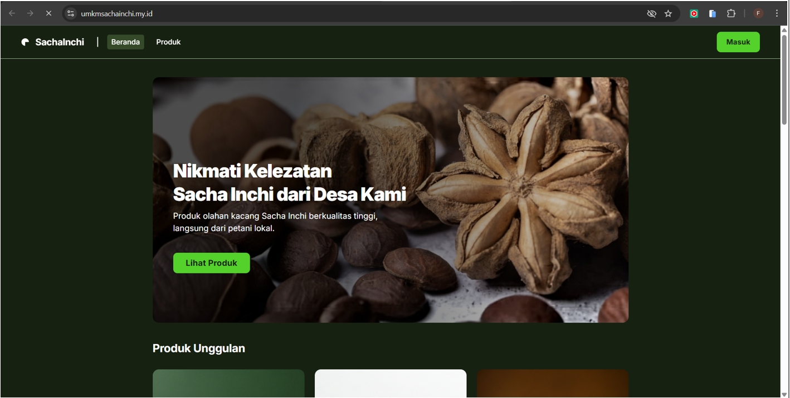

WEB APPLICATION
SachaInchi
Proyek akhir mata kuliah Web Programming 2 berupa aplikasi website untuk pengelolaan produk.
Tech stack
Laravel 12 · PHP 8.3 · Tailwind 4.1 · Alpine JS · SweetAlert2 · SQLite
Fitur utama
- Profil pengguna, edit profil, dan ganti password
- Dashboard admin
- Pengelolaan produk